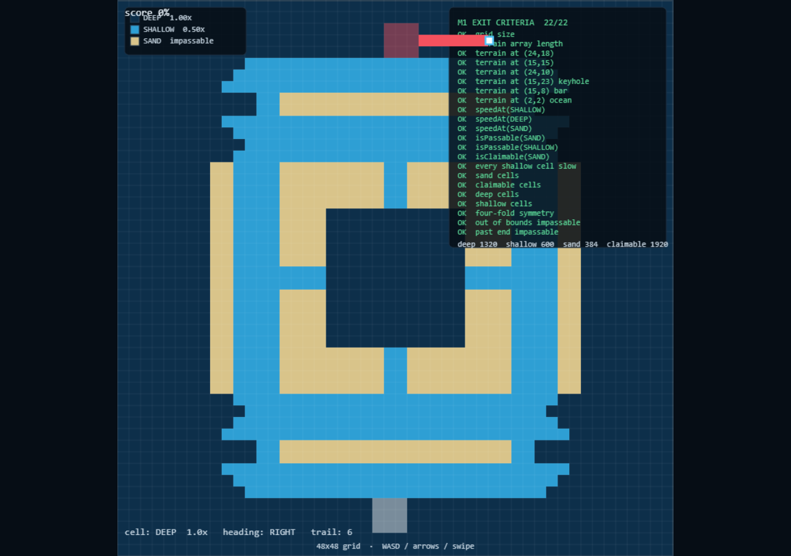
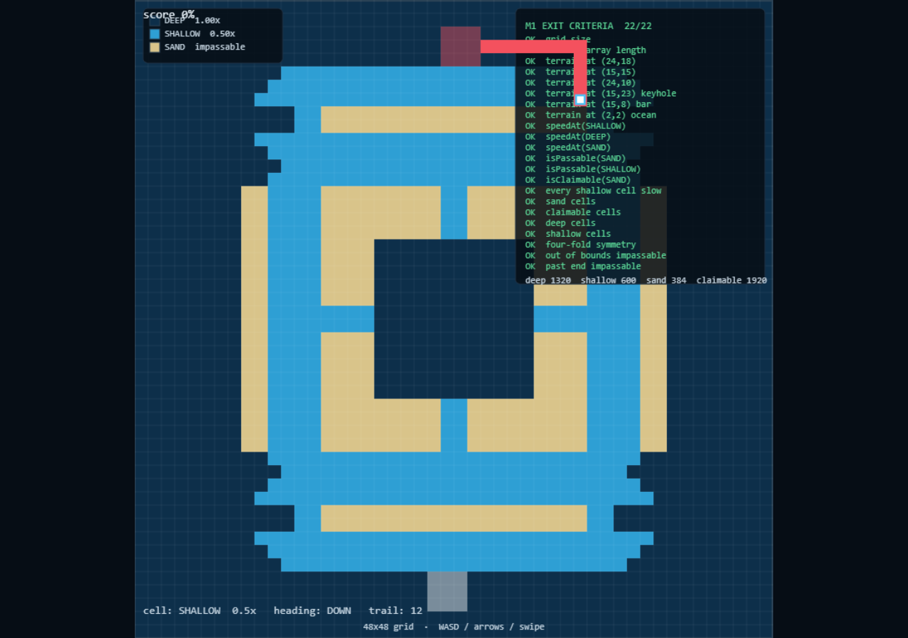
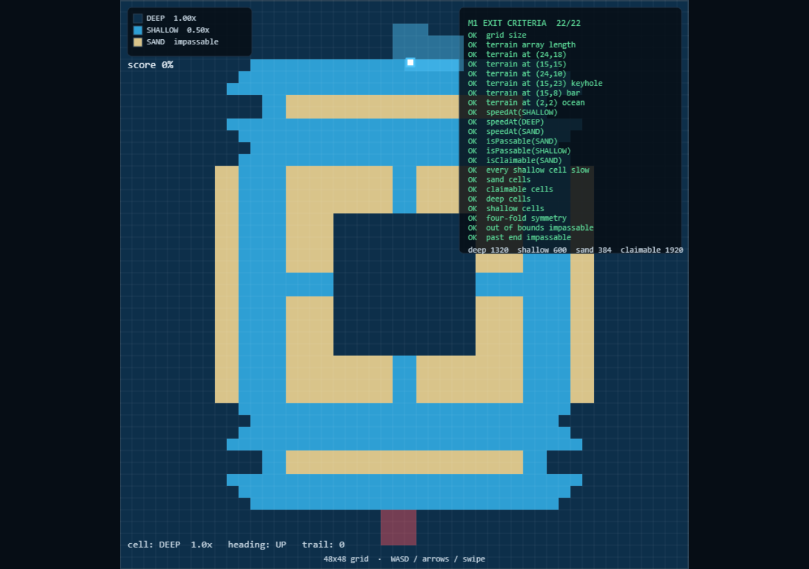

First cycle of the actual game. A boat leaves its home block, lays a trail, and on re-entry the enclosed land is claimed. Pure mechanics, nothing else.
| File | Purpose |
|---|---|
core/territory.ts | Flat Uint8Array owner grid, incremental per-owner counts, dirty set |
core/trail.ts | Flat Set of trail cell indices |
core/capture.ts | Paper.io fillTail flood-fill, ported 1:1 |
core/sim.ts | One tick = boat.step + ownership check + trail/capture |
scenes/GameScene.ts | Renders territory, trails, boat, per-frame labels |
fillTail claims the trail cells plus any region that fails to leak to the border. Trail resets.seen grid means the interior is computed once and two neighbour probes around the same pocket cannot double-claim it. No "which side am I on" logic exists anywhere.| Item | Value |
|---|---|
| Milestone commit | 9c91a35 |
| Merge commit | 1398500 |
| Branch | feature/trail-capture → merged to development |
| Tag | phase1-m3 |
| PR | #3, squash-merged |



territory.counts[1] went 9 → 20. Position-locked browser run, no console errors.owned 18 -> 54 PASS: rectangle loop captured land PASS: trail cleared after banking PASS: trail still owned only by the home block (nothing captured mid-loop) PASS: trail is alive while outside spike delta: 4 PASS: spike captures only its column, no big pocket ALL M3 CAPTURE TESTS PASSED
{"before":9,"after":20,"trail":0,"row":4,"col":24}
errors: none
OWNER_COLORS[ownerId] mapped owner 1 (player) to red because the array was zero-indexed. The browser repro surfaced it instantly: the player's trail rendered red. Fixed by making OWNER_COLORS indexed by owner id with a neutral-0 sentinel.window.__sim — a dev-only handle added for deterministic driving. In-browser counts moved 9 → 20, matching the algorithm.seedSpawns coloured both 3×3 spawn blocks the player's colour. Caught because the test's starting count read 18 instead of 9. Fixed to owner = index + 1; P1 block renders cyan, P2 block would render red once M7 adds the bot.| Criterion | Met? | Evidence |
|---|---|---|
| Leave territory, lay trail | Yes | Trail grows on exit, visible behind the boat |
| Loop, return safely, capture | Yes | Node 9→45, browser 9→20, no errors |
| Trail clears after banking | Yes | trail.length === 0 post-capture |
| Incomplete loop captures nothing | Yes | Counts unchanged while trail is alive |
| Hitting trail does not kill | Yes | No death cause added this milestone |
| No bot / death / combat / UI polish / effects | Yes | Scope held |
M3 complete. PR #3 squash-merged to development @ 1398500. Tag phase1-m3 pushed. Standing by for M4 brief.